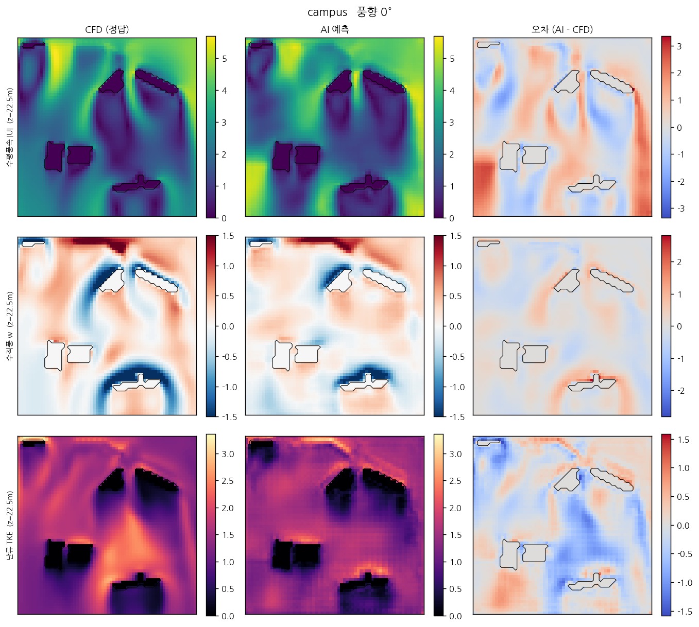

Hyeonseok Jeong
M.S. student (4th semester), Urban Space Research Institute, Department of Urban Information Engineering, Anyang University, Korea. Starting Ph.D. studies in 2027.
About
I work on 3D geospatial information for cities. As drones and Urban Air Mobility (UAM) begin to fly between buildings, maps need more than a flat footprint: building heights, the wind around them, and which parts of the air space are occupied. My research covers how to produce this information and how to compute it fast enough for large areas.
- 3D geospatial data: LOD1 building models and voxels
- GeoAI: deep-learning surrogate models that approximate computational fluid dynamics (CFD)
In my Ph.D., I plan to work on keeping 3D city models up to date: detecting change from satellite imagery with GeoAI and rebuilding only the changed areas through image-based 3D reconstruction.
한국어 소개와 공부 기록은 네이버 블로그(3D 공간정보 연구노트)에 있습니다.
Research
Surrogate-model-based estimation of 3D wind fields around urban buildings for UAM operations
UAM aircraft take off and land in dense urban areas and fly through the low-altitude space between buildings, where the wind changes sharply with location and height. CFD can resolve this flow, but it is too expensive to run over a whole region or to repeat whenever the city changes. I built a procedure that learns from CFD results and predicts 3D wind fields directly from building geometry.
- Built LOD1 building geometry for Anyang and selected 80 districts covering a range of building density and mean height.
- Ran steady-state RANS simulations for 8 wind directions per district (640 cases; reference wind 6 m/s at 50 m above ground).
- Converted the results to 5 m voxels and trained a 3D U-Net that takes building occupancy, distance to the nearest building, wind direction, and height, and predicts the wind components u, v, w and turbulent kinetic energy k.
- Split the data by district (56 training, 12 validation, 12 test) so that no district appears in more than one set.
On 96 test cases, the mean absolute errors over air cells were 0.262, 0.240, and 0.115 m/s for u, v, and w, and 0.191 m²/s² for k. Applying the model to 14,787 urban districts in Gyeonggi Province (about 1,331 km²) took about 36 minutes; the same workload at this study's CFD throughput corresponds to roughly 1.6 years.

Limitations. The evaluation measures how well the surrogate reproduces CFD, not field observations. For wind directions between the trained ones, predictions drift toward the neighboring trained direction. Comparison with measurements and links to aircraft-specific operating limits are next steps.
Interactive viewer: vertiport-windmap (source)
Drone and UAM corridors on a 3D hexagonal grid
Low-altitude routes for drones and UAM depend on wind, restricted airspace, terrain, and buildings at once. I divided the airspace into H3 hexagonal cells stacked by altitude, attached these four kinds of data to each cell, blocked cells that cannot be flown through, and searched for routes over the remaining cells weighted by risk. Built with ArcGIS Pro and Python.
Tools
- Programming and machine learning
- Python, 3D U-Net
- Simulation
- OpenFOAM (RANS)
- 3D web mapping and GIS
- CesiumJS, ArcGIS Pro, H3